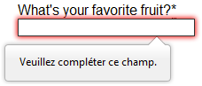
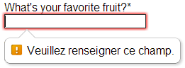
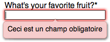

Form validation helps us to ensure that users fill out forms in the correct format, making sure that submitted data will work successfully with our applications. This article leads you through basic concepts and examples about form validation. For more information beyond this tutorial, see the Constraint validation guide.
| Prerequisites: | Computer literacy, a reasonable understanding of HTML, CSS, and JavaScript. |
|---|---|
| Objective: | To understand what form validation is, why it's important, and to apply various techniques to implement it. |
What is form validation?
Go to any popular site with a registration form, and you will notice that they give you feedback when you don't enter your data in the format they are expecting. You'll get messages such as:
- "This field is required" (you can't leave this field blank)
- "Please enter your phone number in the format xxx-xxxx" (it enforces three numbers followed by a dash, followed by four numbers)
- "Please enter a valid e-mail address" (if your entry is not in the format of "somebody@example.com")
- "Your password needs to be between 8 and 30 characters long, and contain one uppercase letter, one symbol, and a number"
This is called form validation — when you enter data, the web application checks it to see that the data is correct. If correct, the application allows the data to be submitted to the server and (usually) saved in a database; if not, it gives you an error message explaining what corrections need to be made. Form validation can be implemented in a number of different ways.
We want to make filling out web forms as easy as possible. So why do we insist on validating our forms? There are three main reasons:
- We want to get the right data, in the right format — our applications won't work properly if our user's data is stored in the incorrect format, or if they don't enter the correct information, or omit information altogether.
- We want to protect our users' accounts — by forcing our users to enter secure passwords, it makes it easier to protect their account information.
- We want to protect ourselves — there are many ways that malicious users can misuse unprotected forms to damage the application they are part of (see Website security).
Warning: Never trust data passed to your server from the client. Even if your form is validating correctly and preventing malformed input, a malicious user can still alter the network request.
Different types of form validation
There are two different types of form validation which you'll encounter on the web:
- Client-side validation is validation that occurs in the browser before the data has been submitted to the server. This is more user-friendly than server-side validation as it gives an instant response. This can be further subdivided:
- JavaScript validation is coded using JavaScript. It is completely customizable.
- Built-in form validation using HTML5 form validation features. This generally does not require JavaScript. Built-in form validation has better performance, but it is not as customizable as JavaScript.
- Server-side validation is validation which occurs on the server after the data has been submitted. Server-side code is used to validate the data before it is saved into the database. If the data fails authentication, a response is sent back to the client to tell the user what corrections to make. Server-side validation is not as user-friendly as client-side validation, as it does not provide errors until the entire form has been submitted. However, server-side validation is your application's last line of defence against incorrect or even malicious data. All popular server-side frameworks have features for validating and sanitizing data (making it safe).
In the real world, developers tend to use a combination of client-side and server-side validation.
Using built-in form validation
One of the features of HTML5 is the ability to validate most user data without relying on scripts. This is done by using validation attributes on form elements, which allow you to specify rules for a form input like whether a value needs to be filled in, the minimum and maximum length of the data, whether it needs to be a number, an email address, or something else, and a pattern that it must match. If the entered data follows all the specified rules, it is considered valid; if not, it is considered invalid.
When an element is valid:
- The element matches the
:validCSS pseudo-class; this will let you apply a specific style to valid elements. - If the user tries to send the data, the browser will submit the form, provided there is nothing else stopping it from doing so (e.g., JavaScript).
When an element is invalid:
- The element matches the
:invalidCSS pseudo-class; this will let you apply a specific style to invalid elements. - If the user tries to send the data, the browser will block the form and display an error message.
Validation constraints on input elements — starting simple
In this section, we'll look at some of the different HTML5 features that can be used to validate <input> elements.
Let's start with a simple example — an input that allows you to choose your favorite fruit out of a choice of banana or cherry. This involves a simple text <input> with a matching label, and a submit <button>. You can find the source code on GitHub as fruit-start.html, and a live example below:
Hidden code
<form> <label for="choose">Would you prefer a banana or cherry?</label> <input id="choose" name="i_like"> <button>Submit</button> </form>
input:invalid {
border: 2px dashed red;
}
input:valid {
border: 2px solid black;
}
To begin with, make a copy of fruit-start.html in a new directory on your hard drive.
The required attribute
The simplest HTML5 validation feature to use is the required attribute — if you want to make an input mandatory, you can mark the element using this attribute. When this attribute is set, the form won't submit (and will display an error message) when the input is empty (the input will also be considered invalid).
Add a required attribute to your input, as shown below:
<form> <label for="choose">Would you prefer a banana or cherry?</label> <input id="choose" name="i_like" required> <button>Submit</button> </form>
Also, take note of the CSS included in the example file:
input:invalid {
border: 2px dashed red;
}
input:valid {
border: 2px solid black;
}
This causes the input to have a bright red dashed border when it is invalid, and a more subtle black border when valid. Try out the new behaviour in the example below:
Validating against a regular expression
Another very common validation feature is the pattern attribute, which expects a Regular Expression as its value. A regular expression (regex) is a pattern that can be used to match character combinations in text strings, so they are ideal for form validation (as well as a variety of other uses in JavaScript). Regexs are quite complex and we do not intend to teach you them exhaustively in this article.
Below are some examples to give you a basic idea of how they work:
a— matches one character that is a (not b, not aa, etc.)abc— matchesa, followed byb, followed byc.a*— matches the character a, zero or more times (+matches a character one or more times).[^a]— matches one character that is not a.a|b— matches one character that is a or b.[abc]— matches one character that is a, b, or c.[^abc]— matches one character that is not a, b, or c.[a-z]— matches any character in the range a–z, lower case only (you can use[A-Za-z]for lower and upper case, and[A-Z]for upper case only).a.c— matches a, followed by any character, followed by c.a{5}— matches a, 5 times.a{5,7}— matches a, 5 to 7 times, but no less or more.
You can use numbers and other characters in these expressions too, such as:
[ -]— matches a space or a dash.[0-9]— matches any digit in the range 0 to 9.
You can combine these in pretty much any way you want, specifying different parts one after the other:
[Ll].*k— A single character that is an upper or lowercase L, followed by zero or more characters of any type, followed by a single lowercase k.[A-Z][A-Za-z' -]+— A single uppercase character followed by one or more characters that are an upper or lower case letter, a dash, an apostrophe, or space. This could be used to validate the city/town names of English-speaking countries, which need to start with a capital letter but don't contain any other characters. Examples from the UK include Manchester, Ashton-under-lyne, and Bishop's Stortford.[0-9]{3}[ -][0-9]{3}[ -][0-9]{4}— A simple match for a US domestic phone number — three digits, followed by a space or a dash, followed by three digits, followed by a space or a dash, followed by four digits. You might have to make this more complex, as some people write their area code in parentheses, but it works for a simple demonstration.
Anyway, let's implement an example — update your HTML to add a pattern attribute, like so:
<form> <label for="choose">Would you prefer a banana or a cherry?</label> <input id="choose" name="i_like" required pattern="banana|cherry"> <button>Submit</button> </form>
input:invalid {
border: 2px dashed red;
}
input:valid {
border: 2px solid black;
}
In this example, the <input> element accepts one of two possible values: the string "banana" or the string "cherry".
At this point, try changing the value inside the pattern attribute to equal some of the examples you saw earlier, and look at how that affects the values you can enter to make the input value valid. Try writing some of your own, and see how you get on! Try to make them fruit-related where possible, so your examples make sense!
Note: Some <input> element types do not need a pattern attribute to be validated. Specifying the email type for example validates the inputted value against a regular expression matching a well-formed email address (or a comma-separated list of email addresses if it has the multiple attribute). As a further example, fields with the url type automatically require a properly-formed URL.
Note: The <textarea> element does not support the pattern attribute.
Constraining the length of your entries
All text fields created by <input> or <textarea> can be constrained in size using the minlength and maxlength attributes. A field is invalid if its value is shorter than the minlength value or longer than the maxlength value. Browsers often don't let the user type a longer value than expected into text fields anyway, but it is useful to have this fine-grained control available.
For number fields (i.e. <input type="number">), the min and max attributes also provide a validation constraint. If the field's value is lower than the min attribute or higher than the max attribute, the field will be invalid.
Let's look at another example. Create a new copy of the fruit-start.html file.
Now delete the contents of the <body> element, and replace it with the following:
<form>
<div>
<label for="choose">Would you prefer a banana or a cherry?</label>
<input type="text" id="choose" name="i_like" required minlength="6" maxlength="6">
</div>
<div>
<label for="number">How many would you like?</label>
<input type="number" id="number" name="amount" value="1" min="1" max="10">
</div>
<div>
<button>Submit</button>
</div>
</form>
- Here you'll see that we've given the
textfield aminlengthandmaxlengthof 6 — the same length as banana and cherry. Entering less characters will show as invalid, and entering more is not possible in most browsers. - We've also given the
numberfield aminof 1 and amaxof 10 — entered numbers outside this range will show as invalid, and you won't be able to use the increment/decrement arrows to move the value outside this range.
input:invalid {
border: 2px dashed red;
}
input:valid {
border: 2px solid black;
}
div {
margin-bottom: 10px;
}
Here is the example running live:
Note: <input type="number"> (and other types, like range) can also take a step attribute, which specifies what increment the value will go up or down by when the input controls are used (like the up and down number buttons).
Full example
Here is a full example to show off usage of HTML's built-in validation features:
<form>
<p>
<fieldset>
<legend>Title<abbr title="This field is mandatory">*</abbr></legend>
<input type="radio" required name="title" id="r1" value="Mr"><label for="r1">Mr.</label>
<input type="radio" required name="title" id="r2" value="Ms"><label for="r2">Ms.</label>
</fieldset>
</p>
<p>
<label for="n1">How old are you?</label>
<!-- The pattern attribute can act as a fallback for browsers which
don't implement the number input type but support the pattern attribute.
Please note that browsers that support the pattern attribute will make it
fail silently when used with a number field.
Its usage here acts only as a fallback -->
<input type="number" min="12" max="120" step="1" id="n1" name="age"
pattern="\d+">
</p>
<p>
<label for="t1">What's your favorite fruit?<abbr title="This field is mandatory">*</abbr></label>
<input type="text" id="t1" name="fruit" list="l1" required
pattern="[Bb]anana|[Cc]herry|[Aa]pple|[Ss]trawberry|[Ll]emon|[Oo]range">
<datalist id="l1">
<option>Banana</option>
<option>Cherry</option>
<option>Apple</option>
<option>Strawberry</option>
<option>Lemon</option>
<option>Orange</option>
</datalist>
</p>
<p>
<label for="t2">What's your e-mail?</label>
<input type="email" id="t2" name="email">
</p>
<p>
<label for="t3">Leave a short message</label>
<textarea id="t3" name="msg" maxlength="140" rows="5"></textarea>
</p>
<p>
<button>Submit</button>
</p>
</form>
body {
font: 1em sans-serif;
padding: 0;
margin : 0;
}
form {
max-width: 200px;
margin: 0;
padding: 0 5px;
}
p > label {
display: block;
}
input[type=text],
input[type=email],
input[type=number],
textarea,
fieldset {
/* required to properly style form
elements on WebKit based browsers */
-webkit-appearance: none;
width : 100%;
border: 1px solid #333;
margin: 0;
font-family: inherit;
font-size: 90%;
-moz-box-sizing: border-box;
box-sizing: border-box;
}
input:invalid {
box-shadow: 0 0 5px 1px red;
}
input:focus:invalid {
box-shadow: none;
}
See Validation-related attributes for a complete list of attributes that can be used to constrain input values, and the input types that support them.
Customized error messages
As seen in the examples above, each time the user tries to submit an invalid form, the browser displays an error message. The way this message is displayed depends on the browser.
These automated messages have two drawbacks:
- There is no standard way to change their look and feel with CSS.
- They depend on the browser locale, which means that you can have a page in one language but an error message displayed in another language.
| Browser | Rendering |
|---|---|
| Firefox 17 (Windows 7) |  |
| Chrome 22 (Windows 7) |  |
| Opera 12.10 (Mac OSX) |  |
To customize the appearance and text of these messages, you must use JavaScript; there is no way to do it using just HTML and CSS.
HTML5 provides the constraint validation API to check and customize the state of a form element. Among other things, it's possible to change the text of the error message. Let's see a quick example:
<form> <label for="mail">I would like you to provide me an e-mail</label> <input type="email" id="mail" name="mail"> <button>Submit</button> </form>
In JavaScript, you call the setCustomValidity() method:
var email = document.getElementById("mail");
email.addEventListener("input", function (event) {
if (email.validity.typeMismatch) {
email.setCustomValidity("I expect an e-mail, darling!");
} else {
email.setCustomValidity("");
}
});
Validating forms using JavaScript
If you want to take control over the look and feel of native error messages, or if you want to deal with browsers that do not support HTML's built-in form validation, you must use JavaScript.
The constraint validation API
More and more browsers now support the constraint validation API, and it's becoming reliable. This API consists of a set of methods and properties available on specific form element interfaces:
- HTMLButtonElement
- HTMLFieldSetElement
- HTMLInputElement
- HTMLOutputElement
- HTMLSelectElement
- HTMLTextAreaElement
Constraint validation API properties
| Property | Description |
|---|---|
validationMessage |
A localized message describing the validation constraints that the control does not satisfy (if any), or the empty string if the control is not a candidate for constraint validation (willValidate is false), or the element's value satisfies its constraints. |
validity |
A ValidityState object describing the validity state of the element. See that article for details of possible validity states. |
willValidate |
Returns true if the element will be validated when the form is submitted; false otherwise. |
Constraint validation API methods
| Method | Description |
|---|---|
checkValidity() |
Returns true if the element's value has no validity problems; false otherwise. If the element is invalid, this method also causes an invalid event at the element. |
HTMLFormElement.reportValidity() |
Returns true if the element or its child controls satisfy validation constraints. When false is returned, cancelable invalid events are fired for each invalid element and validation problems are reported to the user. |
setCustomValidity(message) |
Adds a custom error message to the element; if you set a custom error message, the element is considered to be invalid, and the specified error is displayed. This lets you use JavaScript code to establish a validation failure other than those offered by the standard constraint validation API. The message is shown to the user when reporting the problem. If the argument is the empty string, the custom error is cleared. |
For legacy browsers, it's possible to use a polyfill such as Hyperform to compensate for the lack of support for the constraint validation API. Since you're already using JavaScript, using a polyfill isn't an added burden to your Web site or Web application's design or implementation.
Example using the constraint validation API
Let's see how to use this API to build custom error messages. First, the HTML:
<form novalidate>
<p>
<label for="mail">
<span>Please enter an email address:</span>
<input type="email" id="mail" name="mail">
<span class="error" aria-live="polite"></span>
</label>
</p>
<button>Submit</button>
</form>
This simple form uses the novalidate attribute to turn off the browser's automatic validation; this lets our script take control over validation. However, this doesn't disable support for the constraint validation API nor the application of the CSS pseudo-class :valid, :invalid, :in-range and :out-of-range classes. That means that even though the browser doesn't automatically check the validity of the form before sending its data, you can still do it yourself and style the form accordingly.
The aria-live attribute makes sure that our custom error message will be presented to everyone, including those using assistive technologies such as screen readers.
CSS
This CSS styles our form and the error output to look more attractive.
/* This is just to make the example nicer */
body {
font: 1em sans-serif;
padding: 0;
margin : 0;
}
form {
max-width: 200px;
}
p * {
display: block;
}
input[type=email]{
-webkit-appearance: none;
width: 100%;
border: 1px solid #333;
margin: 0;
font-family: inherit;
font-size: 90%;
-moz-box-sizing: border-box;
box-sizing: border-box;
}
/* This is our style for the invalid fields */
input:invalid{
border-color: #900;
background-color: #FDD;
}
input:focus:invalid {
outline: none;
}
/* This is the style of our error messages */
.error {
width : 100%;
padding: 0;
font-size: 80%;
color: white;
background-color: #900;
border-radius: 0 0 5px 5px;
-moz-box-sizing: border-box;
box-sizing: border-box;
}
.error.active {
padding: 0.3em;
}
JavaScript
The following JavaScript code handles the custom error validation.
// There are many ways to pick a DOM node; here we get the form itself and the email
// input box, as well as the span element into which we will place the error message.
var form = document.getElementsByTagName('form')[0];
var email = document.getElementById('mail');
var error = document.querySelector('.error');
email.addEventListener("input", function (event) {
// Each time the user types something, we check if the
// email field is valid.
if (email.validity.valid) {
// In case there is an error message visible, if the field
// is valid, we remove the error message.
error.innerHTML = ""; // Reset the content of the message
error.className = "error"; // Reset the visual state of the message
}
}, false);
form.addEventListener("submit", function (event) {
// Each time the user tries to send the data, we check
// if the email field is valid.
if (!email.validity.valid) {
// If the field is not valid, we display a custom
// error message.
error.innerHTML = "I expect an e-mail, darling!";
error.className = "error active";
// And we prevent the form from being sent by canceling the event
event.preventDefault();
}
}, false);
Here is the live result:
The constraint validation API gives you a powerful tool to handle form validation, letting you have enormous control over the user interface above and beyond what you can do just with HTML and CSS alone.
Validating forms without a built-in API
Sometimes, such as with legacy browsers or custom widgets, you will not be able to (or will not want to) use the constraint validation API. In that case, you're still able to use JavaScript to validate your form. Validating a form is more a question of user interface than real data validation.
To validate a form, you have to ask yourself a few questions:
- What kind of validation should I perform?
- You need to determine how to validate your data: string operations, type conversion, regular expressions, etc. It's up to you. Just remember that form data is always text and is always provided to your script as strings.
- What should I do if the form does not validate?
- This is clearly a UI matter. You have to decide how the form will behave: Does the form send the data anyway? Should you highlight the fields which are in error? Should you display error messages?
- How can I help the user to correct invalid data?
- In order to reduce the user's frustration, it's very important to provide as much helpful information as possible in order to guide them in correcting their inputs. You should offer up-front suggestions so they know what's expected, as well as clear error messages. If you want to dig into form validation UI requirements, there are some useful articles you should read:
- SmashingMagazine: Form-Field Validation: The Errors-Only Approach
- SmashingMagazine: Web Form Validation: Best Practices and Tutorials
- Six Revision: Best Practices for Hints and Validation in Web Forms
- A List Apart: Inline Validation in Web Forms
An example that doesn't use the constraint validation API
In order to illustrate this, let's rebuild the previous example so that it works with legacy browsers:
<form>
<p>
<label for="mail">
<span>Please enter an email address:</span>
<input type="text" class="mail" id="mail" name="mail">
<span class="error" aria-live="polite"></span>
</label>
<p>
<!-- Some legacy browsers need to have the `type` attribute
explicitly set to `submit` on the `button`element -->
<button type="submit">Submit</button>
</form>
As you can see, the HTML is almost the same; we just removed the HTML validation features. Note that ARIA is an independent specification that's not specifically related to HTML5.
CSS
Similarly, the CSS doesn't need to change very much; we just turn the :invalid CSS pseudo-class into a real class and avoid using the attribute selector that does not work on Internet Explorer 6.
/* This is just to make the example nicer */
body {
font: 1em sans-serif;
padding: 0;
margin : 0;
}
form {
max-width: 200px;
}
p * {
display: block;
}
input.mail {
-webkit-appearance: none;
width: 100%;
border: 1px solid #333;
margin: 0;
font-family: inherit;
font-size: 90%;
-moz-box-sizing: border-box;
box-sizing: border-box;
}
/* This is our style for the invalid fields */
input.invalid{
border-color: #900;
background-color: #FDD;
}
input:focus.invalid {
outline: none;
}
/* This is the style of our error messages */
.error {
width : 100%;
padding: 0;
font-size: 80%;
color: white;
background-color: #900;
border-radius: 0 0 5px 5px;
-moz-box-sizing: border-box;
box-sizing: border-box;
}
.error.active {
padding: 0.3em;
}
JavaScript
The big changes are in the JavaScript code, which needs to do much more of the heavy lifting.
// There are fewer ways to pick a DOM node with legacy browsers
var form = document.getElementsByTagName('form')[0];
var email = document.getElementById('mail');
// The following is a trick to reach the next sibling Element node in the DOM
// This is dangerous because you can easily build an infinite loop.
// In modern browsers, you should prefer using element.nextElementSibling
var error = email;
while ((error = error.nextSibling).nodeType != 1);
// As per the HTML5 Specification
var emailRegExp = /^[a-zA-Z0-9.!#$%&'*+/=?^_`{|}~-]+@[a-zA-Z0-9-]+(?:\.[a-zA-Z0-9-]+)*$/;
// Many legacy browsers do not support the addEventListener method.
// Here is a simple way to handle this; it's far from the only one.
function addEvent(element, event, callback) {
var previousEventCallBack = element["on"+event];
element["on"+event] = function (e) {
var output = callback(e);
// A callback that returns `false` stops the callback chain
// and interrupts the execution of the event callback.
if (output === false) return false;
if (typeof previousEventCallBack === 'function') {
output = previousEventCallBack(e);
if(output === false) return false;
}
}
};
// Now we can rebuild our validation constraint
// Because we do not rely on CSS pseudo-class, we have to
// explicitly set the valid/invalid class on our email field
addEvent(window, "load", function () {
// Here, we test if the field is empty (remember, the field is not required)
// If it is not, we check if its content is a well-formed e-mail address.
var test = email.value.length === 0 || emailRegExp.test(email.value);
email.className = test ? "valid" : "invalid";
});
// This defines what happens when the user types in the field
addEvent(email, "input", function () {
var test = email.value.length === 0 || emailRegExp.test(email.value);
if (test) {
email.className = "valid";
error.innerHTML = "";
error.className = "error";
} else {
email.className = "invalid";
}
});
// This defines what happens when the user tries to submit the data
addEvent(form, "submit", function () {
var test = email.value.length === 0 || emailRegExp.test(email.value);
if (!test) {
email.className = "invalid";
error.innerHTML = "I expect an e-mail, darling!";
error.className = "error active";
// Some legacy browsers do not support the event.preventDefault() method
return false;
} else {
email.className = "valid";
error.innerHTML = "";
error.className = "error";
}
});
The result looks like this:
As you can see, it's not that hard to build a validation system on your own. The difficult part is to make it generic enough to use it both cross-platform and on any form you might create. There are many libraries available to perform form validation; you shouldn't hesitate to use them. Here are a few examples:
- Standalone library
- jQuery plug-in:
Remote validation
In some cases, it can be useful to perform some remote validation. This kind of validation is necessary when the data entered by the user is tied to additional data stored on the server side of your application. One use case for this is registration forms, where you ask for a username. To avoid duplication, it's smarter to perform an AJAX request to check the availability of the username rather than asking the user to send the data, then send back the form with an error.
Performing such a validation requires taking a few precautions:
- It requires exposing an API and some data publicly; be sure it is not sensitive data.
- Network lag requires performing asynchronous validation. This requires some UI work in order to be sure that the user will not be blocked if the validation is not performed properly.
Conclusion
Form validation does not require complex JavaScript, but it does require thinking carefully about the user. Always remember to help your user to correct the data they provide. To that end, be sure to:
- Display explicit error messages.
- Be permissive about the input format.
- Point out exactly where the error occurs (especially on large forms).
In this module
- Your first HTML form
- How to structure an HTML form
- The native form widgets
- Sending form data
- Form data validation
- How to build custom form widgets
- Sending forms through JavaScript
- HTML forms in legacy browsers
- Styling HTML forms
- Advanced styling for HTML forms
- Property compatibility table for form widgets